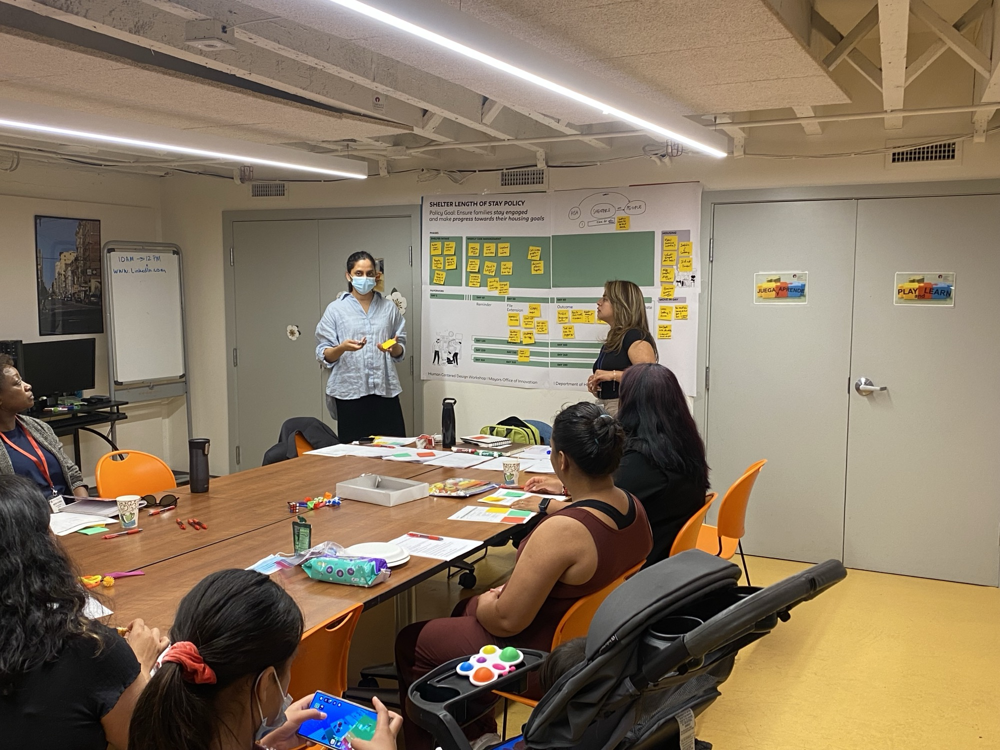
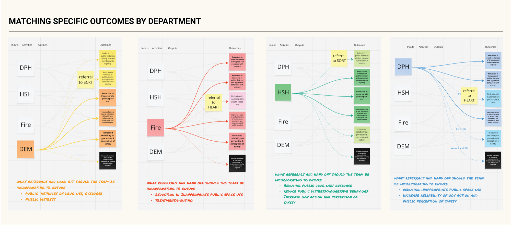

Core skill · Mapping and redesigning how teams work together

Redesigning how four city departments coordinate care
How I mapped San Francisco’s street response across four departments and turned it into a shared way of working — a common goal, a weekly Shared Priority List, and the data foundation underneath.
Eight street teams, four departments, and no one owning the outcome
Eight street-response teams operated across four city departments under overlapping mandates, with no shared view of the client. The highest-need clients — roughly 10% of the unhoused population, using 50% of all services — kept churning through emergency response without moving toward stable care or housing.
People living on the streets with complex health, housing, and resource needs had to navigate eligibility rules and team handoffs they could not manage themselves. Each team owned a slice of the same client’s journey, so resources kept getting spent without changing who actually got off the streets.
Six weeks in, the problem was accountability, not data integration
When I joined the innovation team in 2023, they were solving a data-integration problem. After six weeks of ride-alongs and care-coordination meetings, I pushed the team to reframe it: the real work wasn’t plumbing data together — it was redesigning accountability. Each department was doing its best, but clients needed cross-departmental resources, and no one owned the outcome across teams.
30+ ride-alongs and 45+ interviews showed clients stalling for the same four reasons
I ran 30+ ride-alongs across DPH (Public Health), Fire, DEM (Emergency Management), and HSH (Homelessness & Supportive Housing), plus 45+ interviews with field staff and leadership. Wherever possible I used existing open data to examine the cost of services to the city and the systems these teams operated within. The same pattern surfaced again and again.
Ride-alongs mostly ended with clients left on the street for one of four reasons: staff couldn’t diagnose the need; the need was diagnosed but the client wasn’t eligible; the client was eligible but the resource wasn’t available; or the resource was available but the client wouldn’t take it.
Mapping four departments’ operations exposed every handoff and breakpoint
I mapped the operations across the four departments and worked out every handoff a client goes through, and every breakpoint where they fall out. The first picture was the teams themselves: eight of them, each running its own outreach and response.

A service blueprint, built with frontline staff, traced the client journey across all four departments and named every owner-less handoff. I built these maps on walls with city leaders so they felt ownership over the artifact, and brought frontline staff into the Mayor’s office to share the struggles they face on the streets. The map turned an abstract coordination problem into something city leaders could see in front of them.


Six workshops produced the first street-response goal all four departments shared
I was working with tough stakeholders who had to buy into taking on more work than regulation required. So I designed and facilitated six theory-of-change workshops, each grounded in real client stories, with leaders from all four departments.
The sessions produced the first unified street-response goal jointly held by DPH, Fire, DEM, and HSH — with warm-handoff protocols and named ownership for the transitions nobody had been accountable for before. I also built a logic model mapping each department’s inputs, activities, outputs, and outcomes up to that shared goal.

A weekly Shared Priority List gave four departments one list of who needed them most
The Shared Priority List is the working list of clients with the highest cross-departmental encounters and the most complex resource and health needs — people street teams have seen repeatedly for six months or longer with no visible change. It let four departments agree on who needed coordinated care most, ending the recurring debate over whose clients mattered.
Before it, coordination meetings ran long and open-ended. I added a structured template of five prompts — next steps, coordination, required resources, measuring success, and case review — so every weekly review covered the same ground for every client. The value was the coordination ritual, so it stayed a service, not an app.


A legal data trust made sharing across departments lawful — and reusable
Underneath the new way of working sits ASTRID, the integrated cross-departmental dataset that makes the same client legible across teams. Sharing client information between departments runs into privacy law, including HIPAA and a federal rule protecting substance-use records. I drafted the first version of the legal agreement; the data lead and the City Attorney’s office finalized it as the Homeless Multidisciplinary Data Trust (HMDT) — a reusable framework future city projects build on instead of starting from scratch.
Coordinated care moved the highest-need clients — and became the city’s model
The pilot cohort was 15 of the highest-acuity clients over four months — deliberately small: focused enough for frontline staff to give each client real attention, large enough for breakdowns to surface.
ASTRID is now the operational backbone of Mayor Lurie’s Neighborhood Street Teams model.
- Cited as foundational in the March 2025 Executive Directive on homelessness.
- Selected for a 3-year, $7M Bloomberg Philanthropies partnership — the largest grant ever awarded to a city innovation office.
Ask who owns the outcome before deciding what to build
- 01
Reframing from data integration to accountability was the real unlock. The plumbing mattered, but the leverage came from asking who owned the outcome — not which datasets to merge.
- 02
Getting leaders to co-build the artifact on the wall created ownership. When department chiefs drew the blueprint themselves, they bought into using it.
- 03
Legal groundwork is reusable infrastructure, not overhead. The HMDT was a one-time cost that every future cross-department project can now build on.